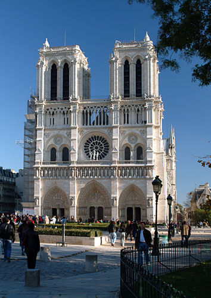
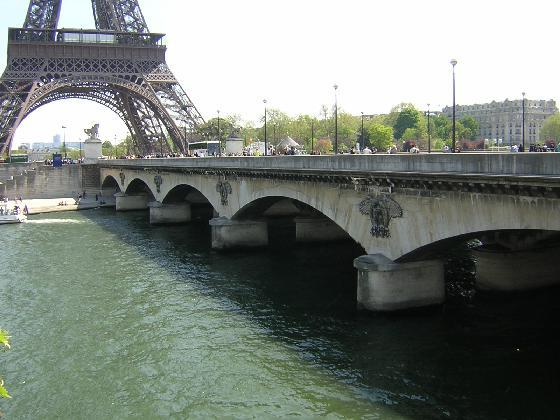
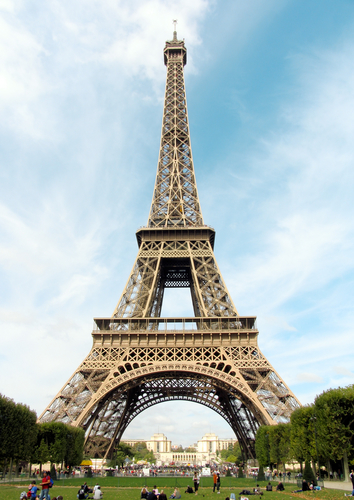

Well informed, eloquent and oh-so-romantic, the ‘City of Light’ is a philosopher, a poet, a crooner. As it always has been, Paris is a million different things to a million different people.You’ll soon discover (as so many others before you have) that Paris is enchanting almost everywhere, at any time, even ‘in the summer, when it sizzles’ and ‘in the winter, when it drizzles’, as Cole Porter put it. And you’ll be back. Trust us

Paris has all but exhausted the superlatives that can reasonably be applied to any city. Notre Dame and the Eiffel Tower – at sunrise, at sunset, at night – have been described countless times, as have the Seine and the subtle (and not-so-subtle) differences between the Left and Right Banks. But what writers have been unable to capture is the grandness and even the magic.

Paris probably has more familiar landmarks than any other city in the world. As a result, first-time visitors often arrive in the French capital with all sorts of expectations: of grand vistas, of intellectuals discussing weighty matters in cafés, of romance along the Seine, of naughty nightclub revues, of rude people who won’t speak English. If you look hard enough, you can probably find all of those. But another approach is to set aside the preconceptions of Paris and to explore the city’s avenues and backstreets as if the tip of the Eiffel Tower or the spire of Notre Dame wasn’t about to pop into view at any moment.